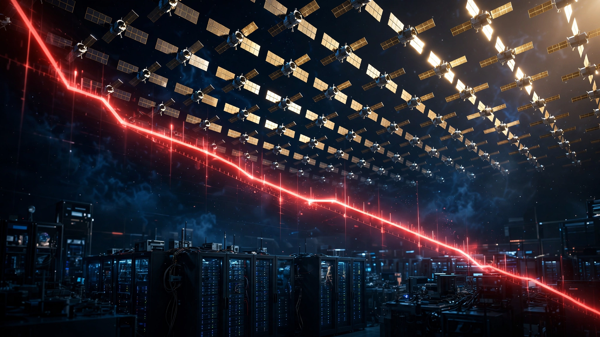

SpaceX’s Float Is About to Increase 6× in Five Weeks. Starlink Can’t Cover the Bill.
The lockup cascade buried in SpaceX’s S-1 filing could release 3.36 billion shares onto the market by late August, expanding the tradeable float by a factor of six. That supply surge arrives while the stock trades at $123.54, nine percent below its $135 IPO price, and while Starlink’s 10.3 million subscribers generate just enough annual profit to fund xAI’s burn rate for four seconds per subscriber per year.

Four seconds. That is how long xAI can operate on the annual revenue generated by a single Starlink subscriber. SpaceX’s satellite internet business collects roughly $1,272 per subscriber per year and converts it at a 63 percent EBITDA margin, producing $801 in annual profit per account. xAI burns that profit in 2.5 seconds flat. SpaceX’s artificial intelligence division, absorbed through its February merger, consumes cash at a rate of $317 per second, annualized from the $2.5 billion operating loss it posted in a single quarter, a quarter in which every one of xAI’s eleven co-founders had already departed and Musk publicly admitted the division “was not built right the first time around.” That arithmetic, derived from SpaceX’s own S-1 filing, defines the central tension in the most valuable company to go public in the history of capital markets.
SpaceX listed on the Nasdaq on June 12 at $135 per share. Then it ripped. Shares peaked near $225.64, briefly making Elon Musk the world’s first trillionaire, before collapsing 45 percent to $123.54, a price that sits 8.5 percent below the offering level and has delivered short sellers an estimated $8.7 billion in paper profit according to analytics firm Ortex Technologies. Its beta of 5.79 means the stock moves nearly six dollars for every dollar the broader market moves, making it among the most volatile large-cap securities ever listed, the kind of number that makes risk managers lose sleep and retail investors lose money. And the real supply event has not happened yet.
The Lockup Cascade
Most IPOs have a single lockup expiration, typically 90 or 180 days after listing, at which point insiders can sell. One date. One event. Price it in, move on. SpaceX did something different: it structured its lockup as a tiered cascade with multiple release dates, each gated by time and, in some cases, stock price thresholds that create a staircase of selling pressure extending from mid-August through late October, a structure whose cumulative impact has not, as far as I can find, been modeled as a multiple of current float.
SpaceX’s IPO valued the company at $1.77 trillion, implying roughly 13.1 billion shares outstanding at the $135 offering price. Roughly 5 percent of total shares trade publicly, or about 656 million shares, reflecting the $85.7 billion raised through the IPO and over-allotment. Another 95 percent, roughly 12.45 billion shares, are Early Release Eligible Shares held by insiders, employees, and pre-IPO investors, many of whom have been locked up for a decade or more.
Here is the cascade, constructed from the lockup provisions disclosed in the S-1:
| Trigger | Shares Released | Cumulative New Supply | Float Multiplier |
|---|---|---|---|
| Q2 earnings + 2 trading days (est. mid-Aug) | 2.49B (20% of ERES) | 2.49B | 4.8× |
| 70 days post-IPO (Aug 21) | 0.87B (7%) | 3.36B | 6.1× |
| 90 days (Sep 10) | 0.87B (7%) | 4.23B | 7.4× |
| 105 days (Sep 25) | 0.87B (7%) | 5.10B | 8.8× |
| 120 days (Oct 10) | 0.87B (7%) | 5.97B | 10.1× |
| 135 days (Oct 25) | 0.87B (7%) | 6.84B | 11.4× |
An additional 10 percent of ERES, or 1.25 billion shares, would unlock at Q2 earnings if the stock trades above $175.50 for at least five of the ten consecutive trading days preceding the earnings release. At $123.54, that condition is dead. Under the conservative scenario, which is now the only plausible one, the float expands by late August, growing to 11.4× by late October. For a company whose stock is already 8.5 percent below its IPO price with a beta of 5.79, the supply mechanics are brutal.
Not everyone will sell, but consider who holds these shares. Holders include venture firms that first backed SpaceX in 2005 and 2008: Founders Fund, DFJ Growth, Sequoia Capital, Andreessen Horowitz, and Kleiner Perkins, names that collectively defined Silicon Valley’s last two decades of dealmaking. They also include Fidelity, T. Rowe Price, Baillie Gifford, and the Ontario Teachers’ Pension Plan, institutional fiduciaries with distribution obligations, fund lifecycle deadlines, limited partners who have waited two decades for liquidity, and in some cases, regulatory requirements to mark positions to market and report returns. What matters is not whether they sell but how fast.
The Subsidy Math
SpaceX’s S-1 revealed three business segments with radically different economics. Starlink, the satellite internet constellation, generated roughly 70 percent of SpaceX’s $18.7 billion in 2025 revenue at a 63 percent EBITDA margin. Launch services contributed most of the remainder. And xAI, acquired through an all-stock merger valued at $250 billion in February, contributed $3.2 billion in revenue while posting a $6.35 billion operating loss for the year and a negative 449 percent free cash flow margin.
Starlink is a genuinely exceptional business that doubled its subscriber base in one year to 10.3 million, operates in 164 countries with more than 9,600 satellites, and delivers broadband to locations that terrestrial infrastructure cannot reach, from research vessels in the Southern Ocean to rural villages in sub-Saharan Africa to forward operating bases in Ukraine. At $1,272 per subscriber in annualized revenue and a 63 percent margin, it produces $801 in annual profit per account. If Starlink were a standalone company, its financial profile would resemble a high-margin infrastructure utility growing at 100 percent year over year, the kind of business Warren Buffett would camp outside a shareholder meeting to buy.
But Starlink is not standalone, and it shares a balance sheet with xAI, which in Q1 2026 lost $2.5 billion on $800 million in revenue, a margin so negative it makes Uber’s pre-IPO financials look like a Treasury bond. Annualized, xAI posts a $10 billion operating loss. To cover that loss entirely from Starlink’s profits, SpaceX would need 12.48 million paying subscribers at the current margin. It has 10.3 million. Closing that gap requires 2.18 million more subscribers, roughly 21 percent more than the current base, and that calculation assumes xAI’s burn rate stays flat while SpaceX simultaneously builds the orbital data center infrastructure described in its filings, deploys a constellation of up to one million compute-equipped satellites, and somehow manufactures custom AI chips through a fabrication partnership with Terafab that has not produced a single wafer.
PitchBook’s analysis of the S-1 noted that AI-related terms accounted for 47 percent of segment-specific language in the filing and 93 percent of the stated total addressable market, while the AI segment contributed just 6.7 percent of revenue excluding advertising. On paper, SpaceX is an AI company. In the financial statements, it is a satellite internet company. Both descriptions are accurate. Which description the stock price reflects is the question investors need to answer before August.
The $28.5 Trillion Question
SpaceX’s S-1 states that the company faces “the largest actionable total addressable market in human history” at $28.5 trillion. Breaking it down: $370 billion in space services, $1.6 trillion in connectivity, and $26.5 trillion in artificial intelligence. That final number deserves examination.
Global GDP in 2025 was approximately $105 trillion. SpaceX’s AI TAM alone represents 25.2 percent of all economic output on Earth. Think about that: one quarter of everything. Total worldwide IT spending, including hardware, software, services, and telecommunications, was $5.4 trillion in 2025 according to Gartner. SpaceX is claiming an AI addressable market 4.9 times larger than every dollar spent on information technology globally, from iPhones to mainframes to the entire cloud. Cloud infrastructure, the segment most directly comparable to SpaceX’s AI ambitions, is approximately $300 billion. SpaceX’s AI TAM is 88 times that.
For comparison, Goldman Sachs projects the AI market at $7 trillion by 2030. McKinsey estimates AI could add $4.4 trillion in annual economic value. Both are among the most bullish institutional forecasts available. SpaceX’s claimed TAM exceeds both by a factor of three to six. Notably, the filing does not disclose the methodology behind the $26.5 trillion figure, nor does it provide a time horizon over which that market is expected to materialize.
At the current stock price of $123.54 and a trailing twelve-month revenue of approximately $23.4 billion (combining Q2-Q4 2025 with Q1 2026), SpaceX trades at roughly 68 times sales. At the IPO price of $135, that multiple was closer to 94×. Either number implies that investors are paying not for the business SpaceX operates today but for a business that does not yet exist: orbital data centers, AI compute at scale, and an addressable market larger than the combined output of every technology company on the planet.
The Debt Stack
SpaceX ended Q1 2026 with $29.1 billion in total debt, including a $20 billion bridge loan that matures approximately 15 months after the IPO, or around September 2027. That is 14 months from now. After raising $85.7 billion from its public offering, SpaceX has signaled plans for an additional $20-25 billion in bond issuance, which would push total debt above $50 billion and make SpaceX one of the most leveraged technology companies in history by absolute debt load, trailing only a handful of telecommunications conglomerates that carry fiber networks spanning entire continents. All three major credit agencies assigned investment-grade ratings with stable outlooks, a fact the bull case leans on heavily, but those ratings reflect the current balance sheet, not the balance sheet that emerges after two more years of $10 billion annual AI losses.
SpaceX’s consolidated net loss in Q1 2026 was $4.276 billion. Annualized, that amounts to $17.1 billion in operating losses alone. Capital expenditures for satellite manufacturing, Starship development, and data center construction add billions more, though the S-1 conveniently omits a segmented capex breakdown. A rough estimate of total cash consumption, losses plus capex, lands between $22 billion and $27 billion per year.
The IPO proceeds buy time, but not as much as you might think. Divide $85.7 billion by $25 billion in annual cash consumption and you get 3.4 years before the money runs out, and that assumes no further acquisitions, no cost overruns on orbital data centers that have never been built, and no write-downs on xAI assets whose co-founders all quit. Meanwhile, $20 billion of that debt must be refinanced or repaid by September 2027. Investment-grade ratings make refinancing feasible, but credit spreads have been widening, and bondholders are watching a stock that has lost 45 percent of its peak value in five weeks.
The Anthropic Backstop
One contract changes everything, or at least it might. Anthropic has agreed to pay SpaceX $1.25 billion per month for access to AI computing infrastructure through May 2029, a $15 billion annual contract disclosed in the S-1 that by itself nearly matches the combined revenue of SpaceX’s space and connectivity segments. Google has signed a separate compute deal with undisclosed but reportedly comparable terms. Together, these contracts bring roughly $26 billion in annualized revenue, more than doubling what SpaceX earned in all of 2025 and providing the kind of revenue visibility that transforms a speculative narrative into a fundable business plan.
But the deal creates its own problem. If Anthropic represents 45 percent of pro-forma revenue and Google accounts for a comparable share, SpaceX transforms from a diversified space-connectivity-AI conglomerate into a company where two customers generate most of the money. That is customer concentration risk of a kind typically associated with defense contractors and semiconductor equipment suppliers, not trillion-dollar technology platforms. It is not how the S-1 narrative reads, but it is how the ledger adds up.
Strongest Counterargument
SpaceX has beaten worse odds than a stock trading below its IPO price five weeks after listing. Falcon 9 failed its first three launches and the company nearly went bankrupt in 2008 before its fourth flight succeeded. Starlink was dismissed as technically impossible and is now the largest satellite constellation in history by a factor of ten. Musk raised $85.7 billion in an IPO at a time when most analysts said the public market window was closing. The investment-grade ratings from Moody’s, Fitch, and S&P suggest the debt is serviceable, the Anthropic and Google contracts provide revenue visibility that most early-stage AI companies would kill for, and Starlink’s subscriber growth trajectory of 100 percent year over year could reach the 12.5 million break-even threshold within months. Lockup cascades are known mechanisms that sophisticated investors price into their models before an IPO ever lists. The early investors who held through Falcon 1 explosions and a near-death experience are not the type to dump stock at the first dip below IPO price. What looks like a supply overhang may in practice be absorbed by the same retail and institutional demand that produced the largest IPO in history six weeks ago. The company was valued at $1.77 trillion for a reason, and that reason, the vertical integration of launch, connectivity, and AI compute, is not less compelling because the stock pulled back.
Limitations
The float multiplier calculation uses the $1.77 trillion valuation divided by $135 per share to estimate total shares outstanding, because SpaceX has not disclosed a precise fully diluted share count in public filings reviewed for this article. The lockup schedule is derived from the Motley Fool’s analysis of the S-1 provisions, not from a direct reading of the full lockup agreement. xAI’s burn rate is annualized from a single quarter (Q1 2026) and may not reflect cost optimization or seasonal variation. The Anthropic contract value of $1.25 billion per month comes from PitchBook’s S-1 dissection; the exact terms, including margins and termination provisions, are not publicly disclosed. The TAM comparison uses 2025 global IT spending data from Gartner; SpaceX’s TAM may project forward to 2035 or beyond, though no time horizon is specified in the filing. Morningstar’s $63 fair value is a probability-weighted estimate across three scenarios and represents the most bearish institutional view, not a consensus; Citi, by contrast, has a buy rating on SpaceX. I hold no position in SPCX, CoreWeave, or Nebius.
The Bottom Line
SpaceX contains two businesses. One is among the best infrastructure companies ever created: a satellite internet monopoly with 10.3 million subscribers growing at 100 percent per year, a reusable rocket fleet that launches more payload to orbit than every other entity on Earth combined, and investment-grade credit ratings. The other is a money furnace that lost $10 billion last year and whose stated addressable market is five times larger than total global IT spending.
If you own SpaceX shares, know precisely what you are pricing in: not the Starlink business, which at a standalone valuation would be worth a fraction of the current market cap, but the AI narrative that accounts for 93 percent of the stated TAM and nearly all of the losses. Starting as early as mid-August, the lockup cascade could put 3.36 billion new shares on the market by August 21, a 6.1× expansion of the float. If you are a Starlink subscriber, your annual payment funds 2.5 seconds of xAI compute. SpaceX needs 2.18 million more of you before Starlink can cover the AI bet. If you are an early SpaceX investor with shares unlocking in August, the company you backed in 2005 made rockets. In 2026, that same company is pitching orbital data centers. Whether those are the same company depends on whether you believe a $26.5 trillion market exists that nobody else can see.